Chapter 6 Data Visualization with ggplot2
Main reference for this chapter: R graphics cookbook (https://r-graphics.org/)
Other useful references:
Function reference: https://ggplot2.tidyverse.org/reference/index.html
Extension: https://exts.ggplot2.tidyverse.org/gallery/
ggplot2: Elegant Graphics for Data Analysis: https://ggplot2-book.org/
In the previous chapter, we learned how to create some basic plots with base R. In this chapter, we will use ggplot2 for data visualization.
We will use some datasets from the package gcookbook, so install it if needed.
Load the packages gcookbook, tidyverse and nycflights13.
library(gcookbook) # datasets for illustration
library(tidyverse) # includes ggplot2 and dplyr
library(nycflights13) # includes the dataset flights6.1 Bar charts
We start with bar charts. Many ideas in this section (mapping variables to aesthetics, adding layers, changing colours, adding labels) are transferable to other plot types.
Recall that there are two types of bar charts:
Recall there are two types of bar charts:
Bar chart of values: x-axis is a categorical variable, y-axis is a numeric value (for example, mean, median).
Bar chart of counts: x-axis is a categorical variable, y-axis is the number of observations in each category.
In ggplot:
For a bar chart of values, use
geom_col(). (This is the same asgeom_bar(stat = "identity")For a bar chart of counts, use
geom_bar(). By default it usesstat = "count".
Bar chart of values:
Consider mtcars. We create a bar chart of the mean car weight grouped by the number of gears. Since gear is a category, we convert it to a factor.
mtcars_wt <- mtcars %>%
group_by(gear) %>%
summarize(mean_wt_by_gear = mean(wt)) %>%
ungroup() %>%
mutate(gear = factor(gear))Create the bar chart:
ggplot(mtcars_wt, aes(x = gear, y = mean_wt_by_gear)) +
geom_col() +
labs(
title = "Mean Weight by Number of Gears",
x = "Number of gears",
y = "Mean weight (1000 lbs)"
)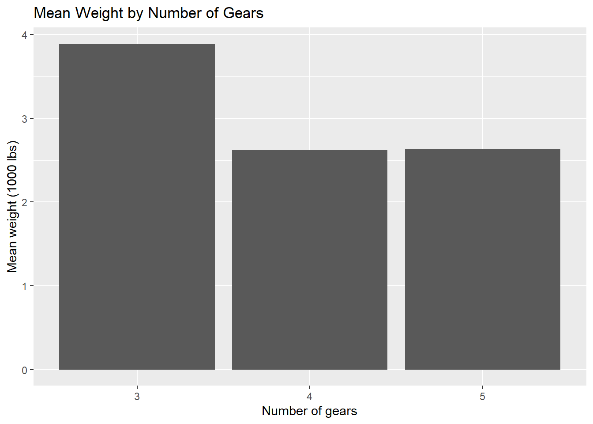
To change the fill colour of bars, use fill.
ggplot(mtcars_wt, aes(x = gear, y = mean_wt_by_gear)) +
geom_col(fill = "lightblue") +
labs(
title = "Mean Weight by Number of Gears",
x = "Number of gears",
y = "Mean weight (1000 lbs)"
)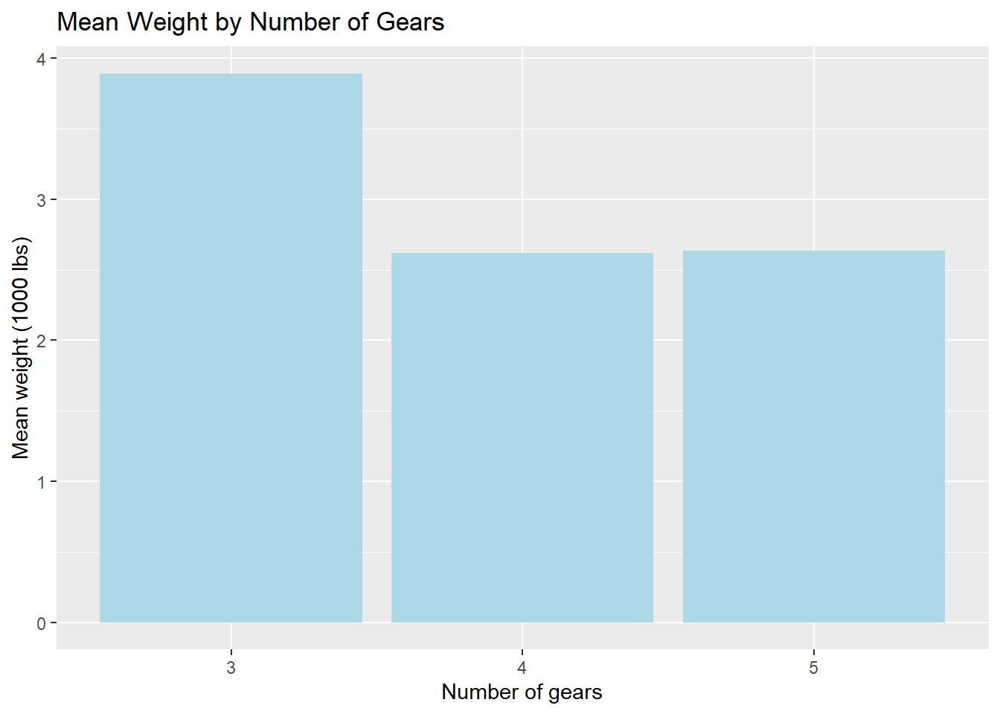
To add an outline around the bars, use colour (or color).
ggplot(mtcars_wt, aes(x = gear, y = mean_wt_by_gear)) +
geom_col(color = "red") +
labs(
title = "Mean Weight by Number of Gears",
x = "Number of gears",
y = "Mean weight (1000 lbs)"
)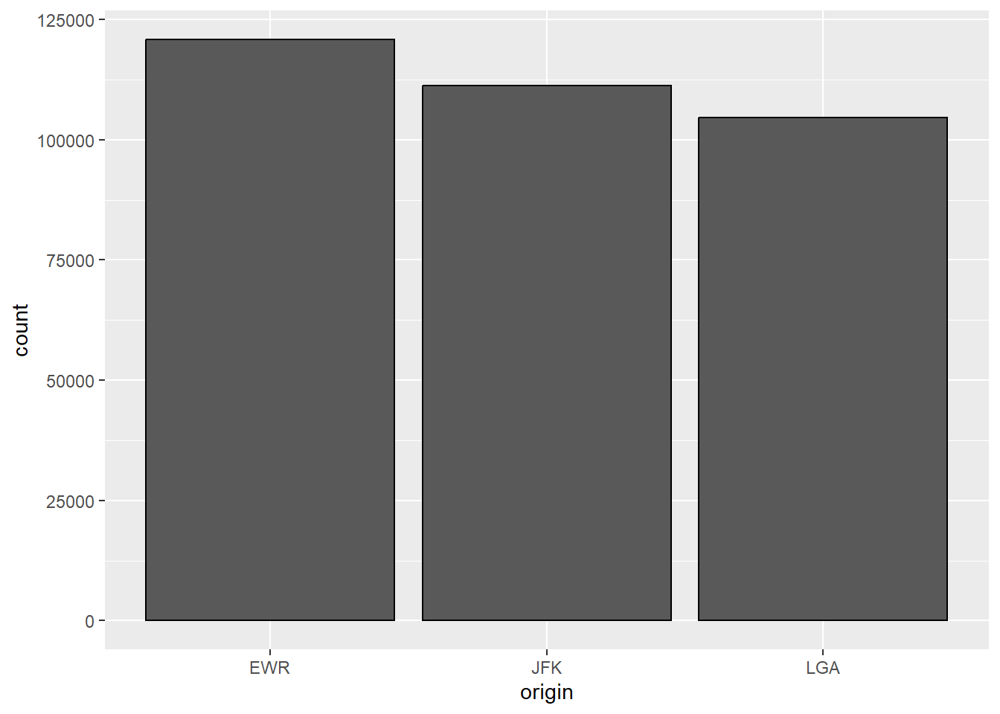
You can combine both:
ggplot(mtcars_wt, aes(x = gear, y = mean_wt_by_gear)) +
geom_col(fill = "lightblue", color = "red") +
labs(
title = "Mean Weight by Number of Gears",
x = "Number of gears",
y = "Mean weight (1000 lbs)"
)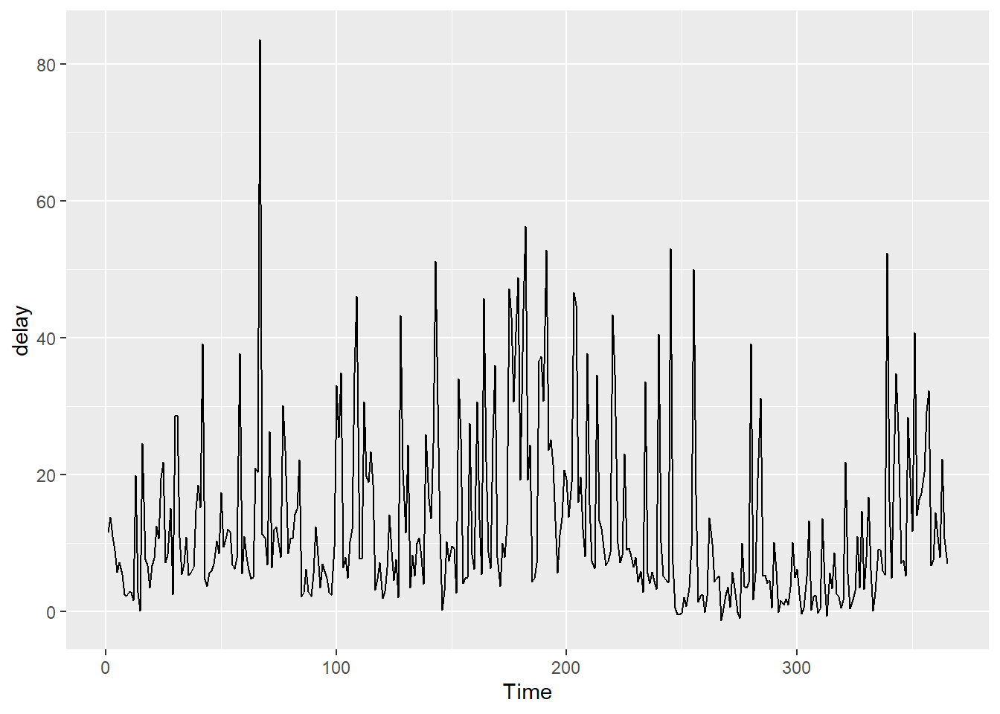
Grouped bars (adding another categorical variable)
A basic bar chart of values uses one categorical variable on the x-axis. If you want to include another categorical variable to divide up the bars, map that variable to fill.
In mtcars, vs represents the engine of the car with 0 = V-shaped and 1 = straight. We can use vc to divide up the data in addition to gear using fill. Since gear and vs are categories, we convert them to factors.
# prepare the data
mtcars_wt2 <- mtcars %>%
group_by(gear, vs) %>%
summarize(mean_wt = mean(wt)) %>%
ungroup() %>%
mutate(
gear = factor(gear),
vs = factor(vs)
)To create a grouped bar chart, set position = "dodge" in geom_col(); otherwise, you will get a stacked bar chart. Because we will demostrate several similar plots with the same labs. We will first define the labels once:
common_labs <- labs(
title = "Mean Weight by Gears and Engine Shape",
x = "Gears",
y = "Mean weight",
fill = "Engine type"
)# plot
ggplot(mtcars_wt2, aes(x = gear, y = mean_wt, fill = vs)) +
geom_col(position = "dodge") +
common_labs
Without position = "dodge", bars are stacked (this is the default):
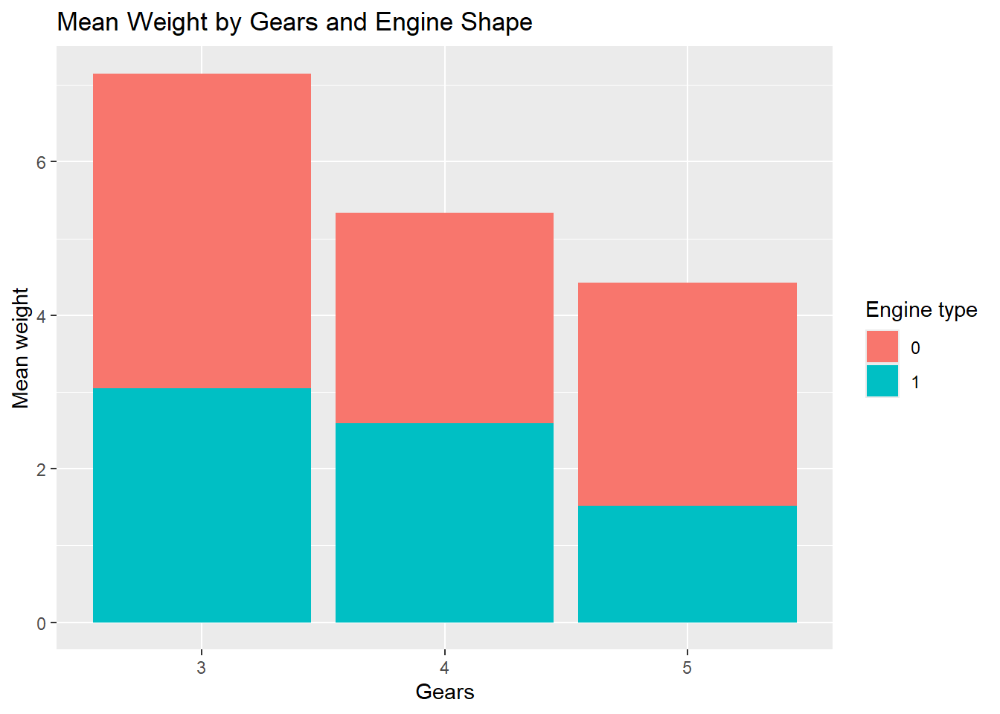
To change the colours of the bars, you can use scale_fill_brewer():
ggplot(mtcars_wt2, aes(x = gear, y = mean_wt, fill = vs)) +
geom_col(position = "dodge") +
scale_fill_brewer(palette = "Pastel2") +
common_labs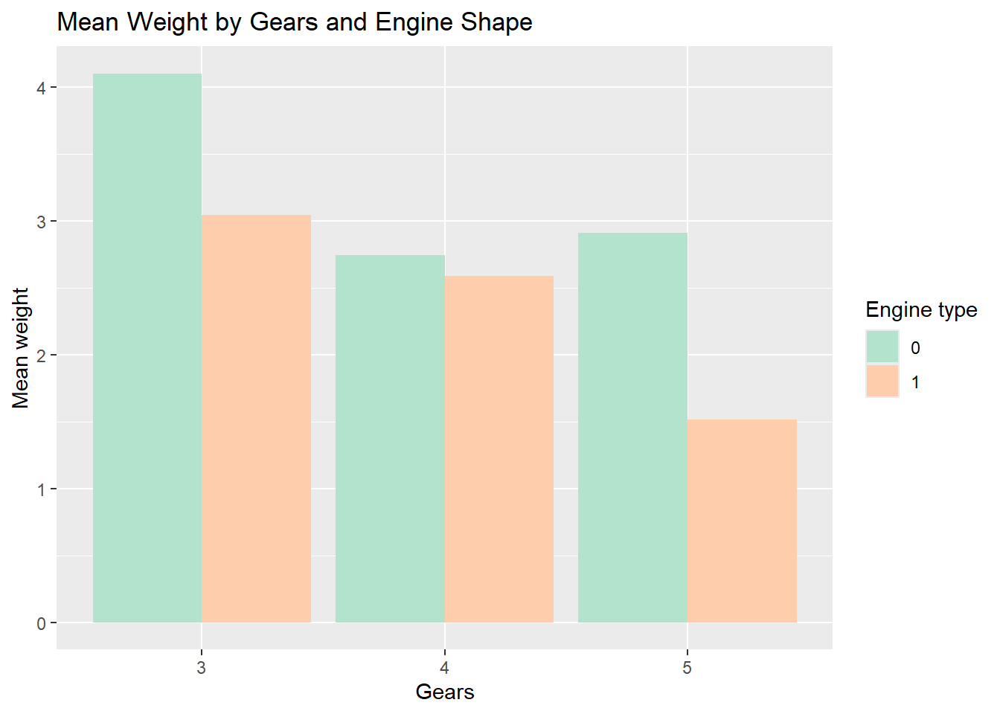
You can try different palettes:

Using palette = "Oranges":
ggplot(mtcars_wt2, aes(x = gear, y = mean_wt, fill = vs)) +
geom_col(position = "dodge") +
scale_fill_brewer(palette = "Oranges") +
common_labs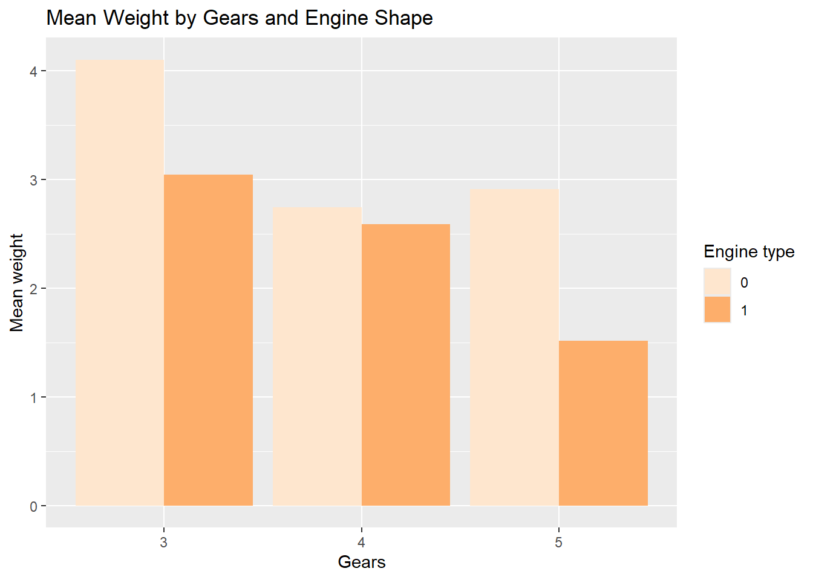
Using a manually defined palette:
ggplot(mtcars_wt2, aes(x = gear, y = mean_wt, fill = vs)) +
geom_col(position = "dodge") +
scale_fill_manual(values = c("#cc6666", "#66cccc")) +
common_labs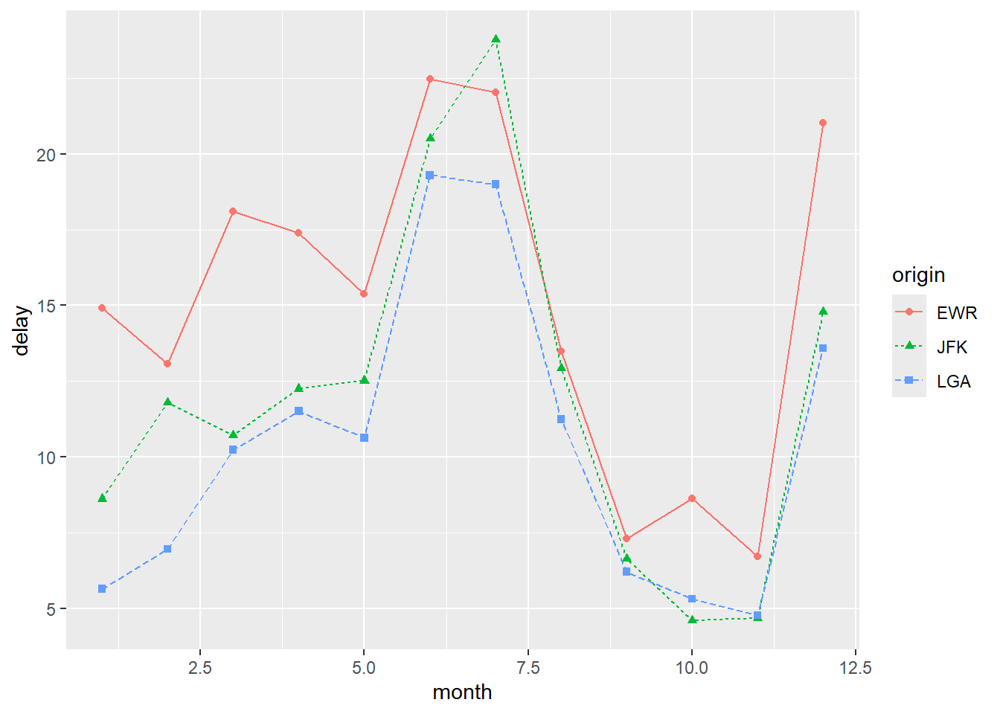
Bar Charts of Counts
A bar chart of counts is similar, except you only supply the x variable and let ggplot compute counts.
Bar chart of the number of cars by gear in mtcars:
ggplot(mtcars, aes(x = factor(gear))) +
geom_bar() +
labs(
title = "Number of Cars by Gears",
x = "Number of gears",
y = "Count"
)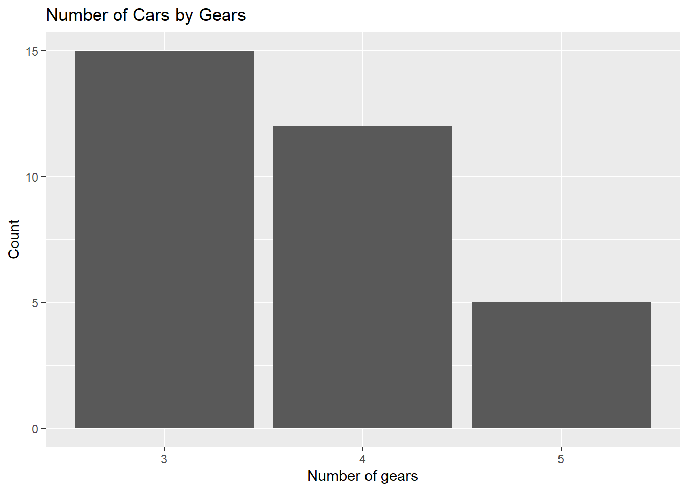
Bar chart of the number of flights by each month in nycflights13:
ggplot(flights, aes(x = factor(month))) +
geom_bar(fill = "lightblue") +
labs(
title = "Number of Flights by Month",
x = "Month",
y = "Count"
)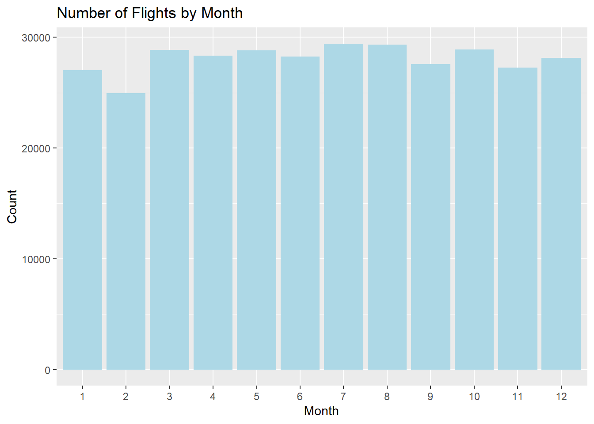
Controlling bar width (default is width = 0.9):
ggplot(flights, aes(x = factor(month))) +
geom_bar(fill = "lightblue", width = 0.5) +
labs(
title = "Number of Flights by Month",
x = "Month",
y = "Count"
)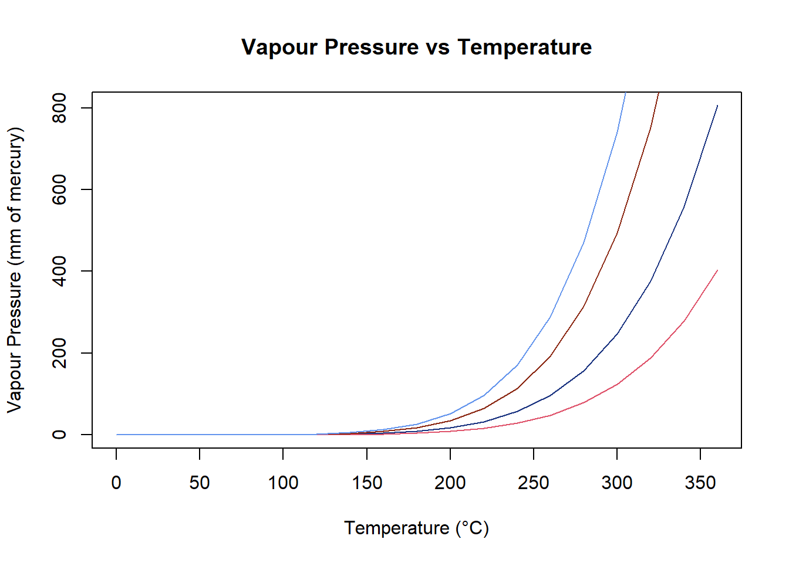
Bar chart of the number of flights by origin and month (grouped bars):
ggplot(flights, aes(x = origin, fill = factor(month))) +
geom_bar(position = "dodge", color = "black") +
labs(
title = "Number of Flights by Origin and Month",
x = "Origin",
y = "Count",
fill = "Month"
)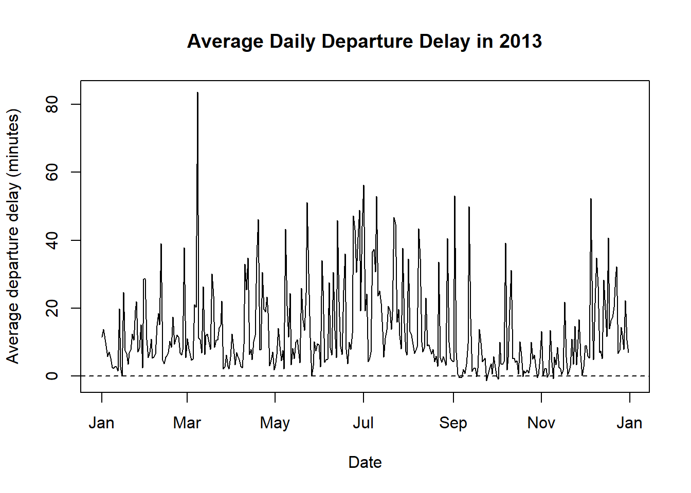
6.2 Line Graph
Suppose we want to make a line graph of the daily average departure delay in the flights dataset.
avg_delay <- flights %>%
group_by(year, month, day) %>%
summarize(delay = mean(dep_delay, na.rm = TRUE)) %>%
ungroup() %>%
mutate(
date = as.Date(sprintf("%d-%02d-%02d", year, month, day))
)
ggplot(avg_delay, aes(x = date, y = delay)) +
geom_line() +
labs(
x = "Date",
y = "Average departure delay (minutes)",
title = "Daily Average Departure Delay of Flights from NYC in 2013"
)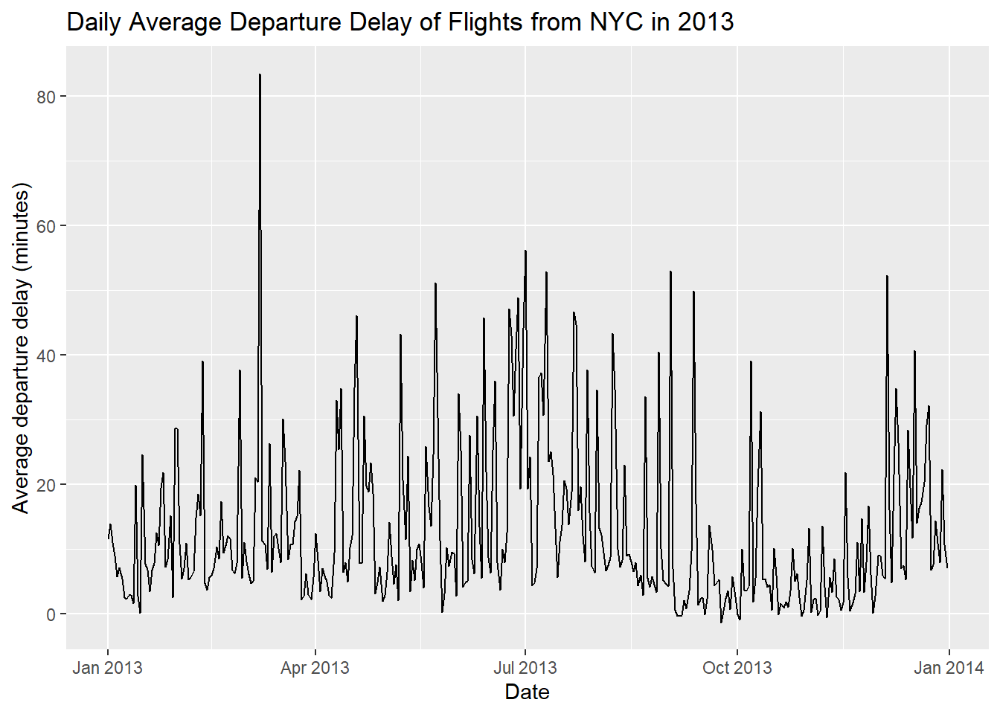
Line Graph with multiple lines
We now compare the average monthly departure delay across the three NYC airports.
# prepare the data
flights_delay <- flights %>%
group_by(year, month, origin) %>%
summarize(delay = mean(dep_delay, na.rm = TRUE)) %>%
ungroup() %>%
mutate(
date = as.Date(sprintf("%d-%02d-01", year, month))
)Line Graph:
ggplot(flights_delay, aes(x = date, y = delay, color = origin)) +
geom_line() +
labs(
x = "Month",
y = "Average departure delay (minutes)",
title = "Average Monthly Departure Delay by Airport"
)
Different aesthetics can be used to distinguish groups.
Using line type instead of color:
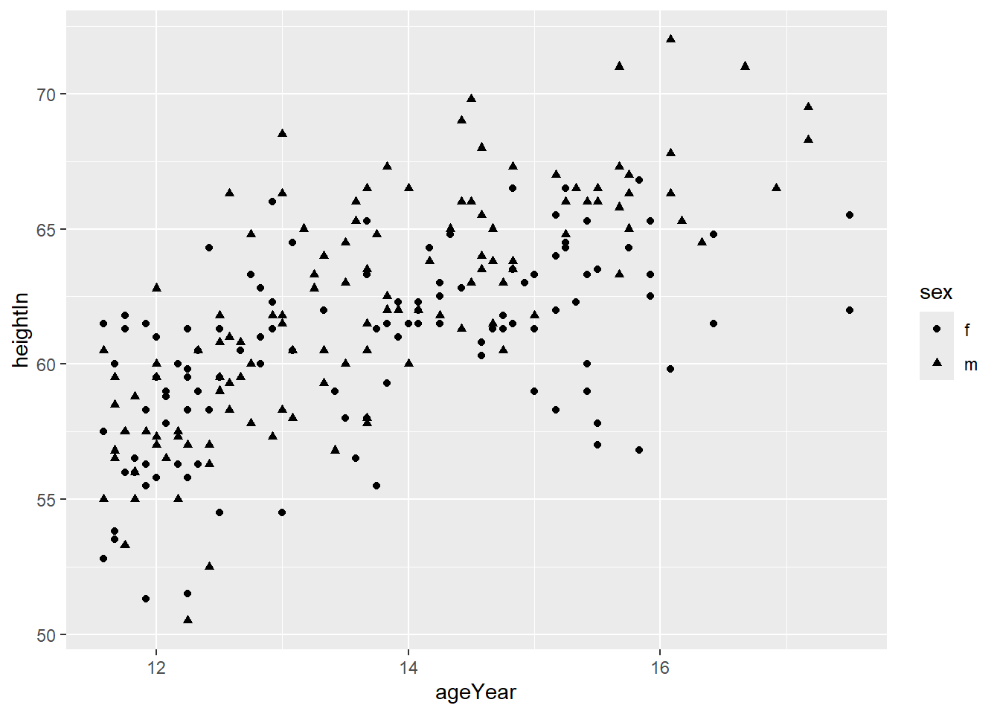
As in base R, it is often helpful to show both lines and points:
ggplot(
flights_delay,
aes(x = date, y = delay, color = origin, linetype = origin)) +
geom_line() +
geom_point()
Change point shapes by group:
ggplot(
flights_delay,
aes(x = date, y = delay,
color = origin, linetype = origin, shape = origin)) +
geom_line() +
geom_point()
To use a single point shape for all groups, specify it inside geom_point().
The default shape is 16. The fill argument only applies to shapes 21–25.
ggplot(flights_delay, aes(x = date, y = delay, color = origin)) +
geom_line() +
geom_point(shape = 22, size = 3, fill = "white", color = "darkred")
Using a different colour palette and thicker lines:
ggplot(flights_delay, aes(x = date, y = delay, color = origin)) +
geom_line(size = 2) +
geom_point(shape = 22, size = 3, fill = "white", color = "darkred") +
scale_colour_brewer(palette = "Set2")
6.3 Scatter Plots
Scatter plots are commonly used to visualize the relationship between two continuous variables. They can also be useful when one or both variables are discrete, especially for exploratory analysis.
The dataset heightweight contains information on sex, age, height, and weight
of a group of schoolchildren.
head(heightweight)
## sex ageYear ageMonth heightIn weightLb
## 1 f 11.92 143 56.3 85.0
## 2 f 12.92 155 62.3 105.0
## 3 f 12.75 153 63.3 108.0
## 4 f 13.42 161 59.0 92.0
## 5 f 15.92 191 62.5 112.5
## 6 f 14.25 171 62.5 112.0To create a basic scatter plot, use geom_point():
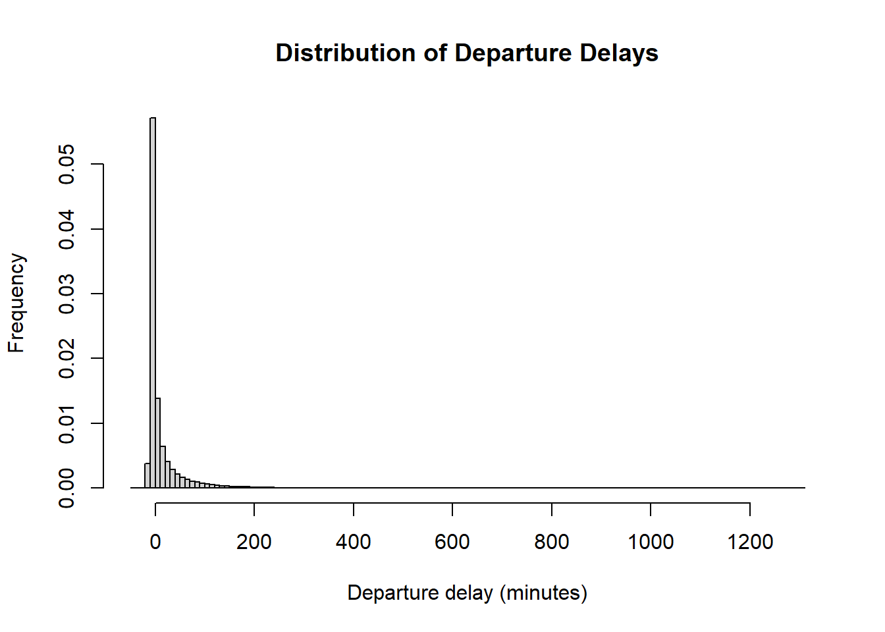
You can set the appearance of the points by specifying arguments directly
inside geom_point().
ggplot(heightweight, aes(x = ageYear, y = heightIn)) +
geom_point(size = 1.5, shape = 4, color = "blue")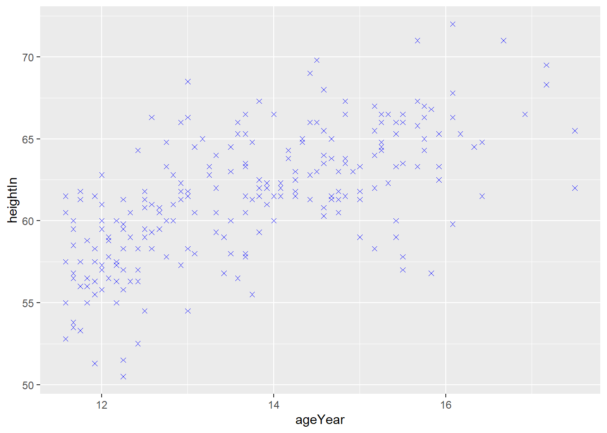
If shape is between 21 and 25, you can control the interior (fill) and the
outline (color) separately.
ggplot(heightweight, aes(x = ageYear, y = heightIn)) +
geom_point(size = 1.5, shape = 22, fill = "red", color = "blue")
Visualizing an additional discrete variable
A common use of scatter plots is to show how the relationship differs across groups.
For example, use different colours for different values of sex:

Or use different shapes:
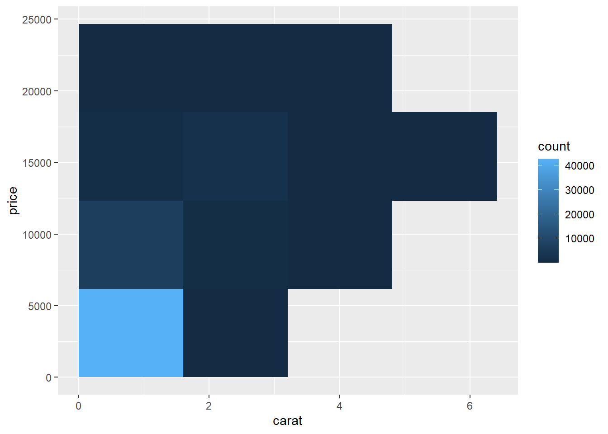
You can combine both colour and shape:
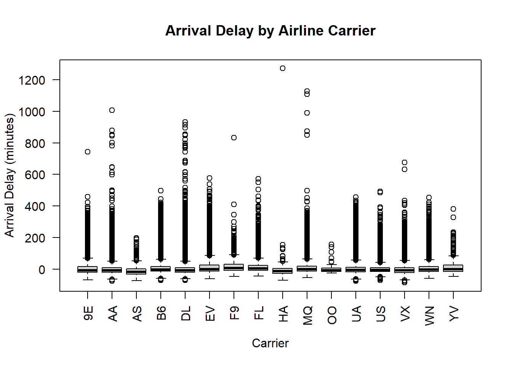
To manually control shapes and colours, use scale_shape_manual() and
scale_colour_*().
ggplot(heightweight, aes(x = ageYear, y = heightIn, shape = sex, color = sex)) +
geom_point() +
scale_shape_manual(values = c(21,22)) +
scale_colour_brewer(palette = "Set2")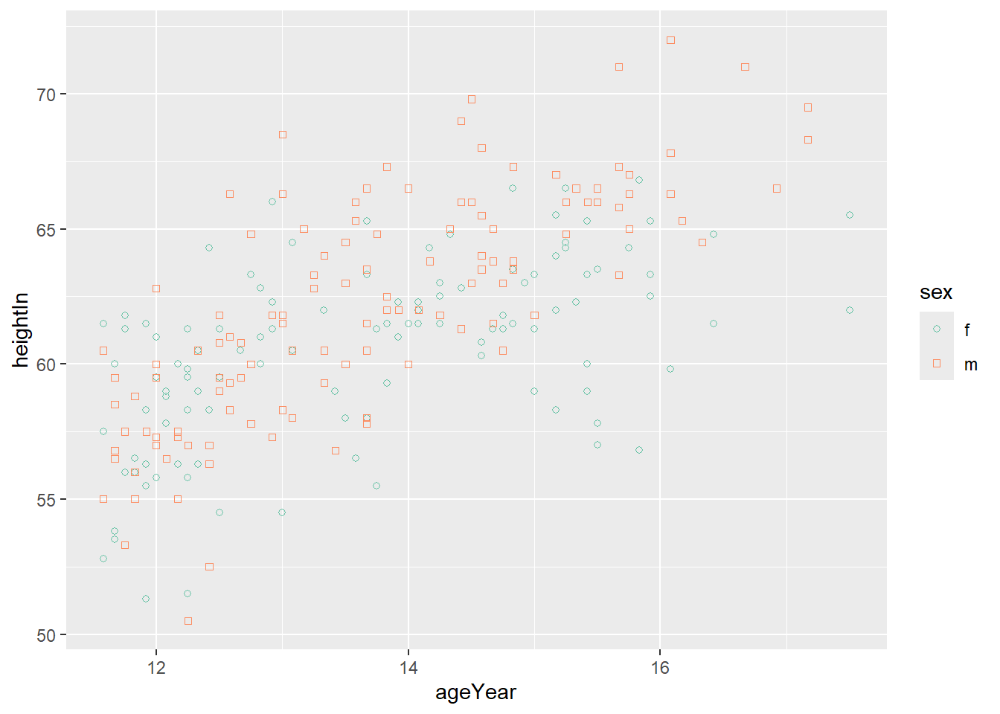
Visualizing an additional continuous variable
You can also map a continuous variable to color. In this case, ggplot
automatically uses a gradient.
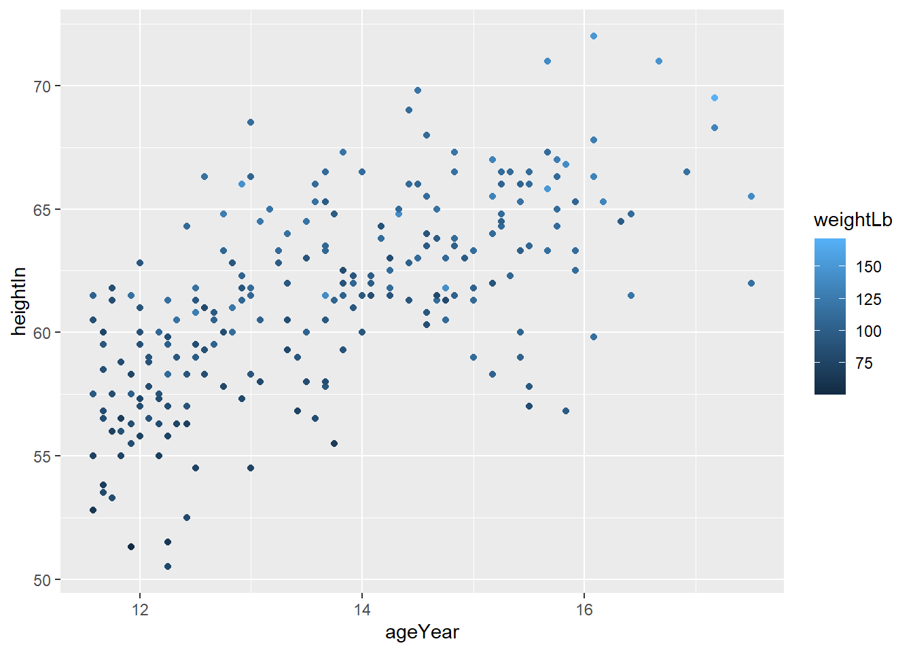
Visualizing two additional discrete variables
Now create a new discrete variable indicating whether a child weighs less than 100 pounds or at least 100 pounds.
We can visualize both sex and weightgroup by mapping one to shape and the
other to fill.
ggplot(heightweight2, aes(x = ageYear, y = heightIn, shape = sex, fill = weightgroup)) +
geom_point() +
scale_shape_manual(values = c(21, 24)) +
scale_fill_manual(
values = c("red", "black"),
guide = guide_legend(override.aes = list(shape = 21)) # to change the legend
) 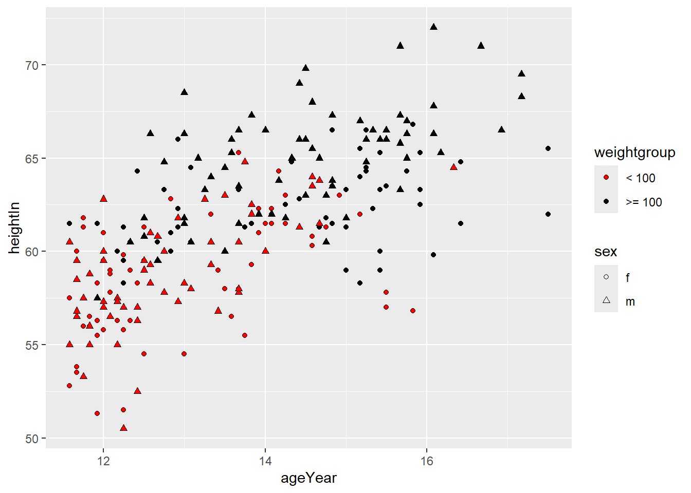
Controlling axis ticks, limits, and labels
ggplot(heightweight2,
aes(x = ageYear, y = heightIn,
shape = sex, fill = weightgroup)) +
geom_point() +
scale_shape_manual(values = c(21, 24)) +
scale_fill_manual(
values = c("red", "black"),
guide = guide_legend(override.aes = list(shape = 21))
) +
scale_x_continuous(
name = "Age (years)",
breaks = 11:18
) +
scale_y_continuous(
name = "Height (inches)",
breaks = seq(50, 70, 5)
) +
# controlling x-axis, y-axis range
coord_cartesian(
xlim = c(11, 18),
ylim = c(50, 73)
)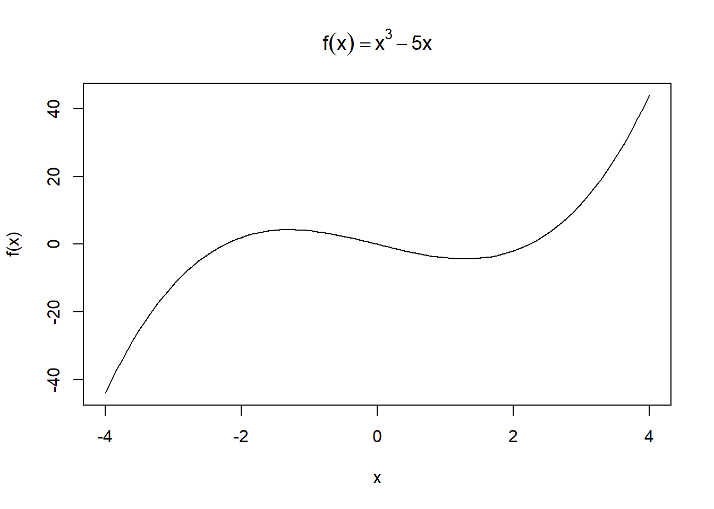
6.3.1 Controlling the y-axis range
By default, ggplot chooses the y-axis range to include all observed values.
Sometimes you may want to control the range manually.
Raw departure delays for a single busy day. Departure delays have extreme positive outliers, which stretch the y-axis and compress most of the data near 0.
one_day <- flights %>%
filter(month == 1, day == 1)
ggplot(one_day, aes(x = sched_dep_time, y = dep_delay)) +
geom_point(alpha = 0.5) +
labs(
x = "Scheduled departure time",
y = "Departure delay (minutes)",
title = "Departure Delays on January 1, 2013"
)Most points clustered near 0
A few extreme delays (hundreds of minutes)
Zoom in:
ggplot(one_day, aes(x = sched_dep_time, y = dep_delay)) +
geom_point(alpha = 0.5) +
coord_cartesian(ylim = c(-20, 100)) +
labs(
title = "Departure Delays on January 1, 2013 (Zoomed In)"
)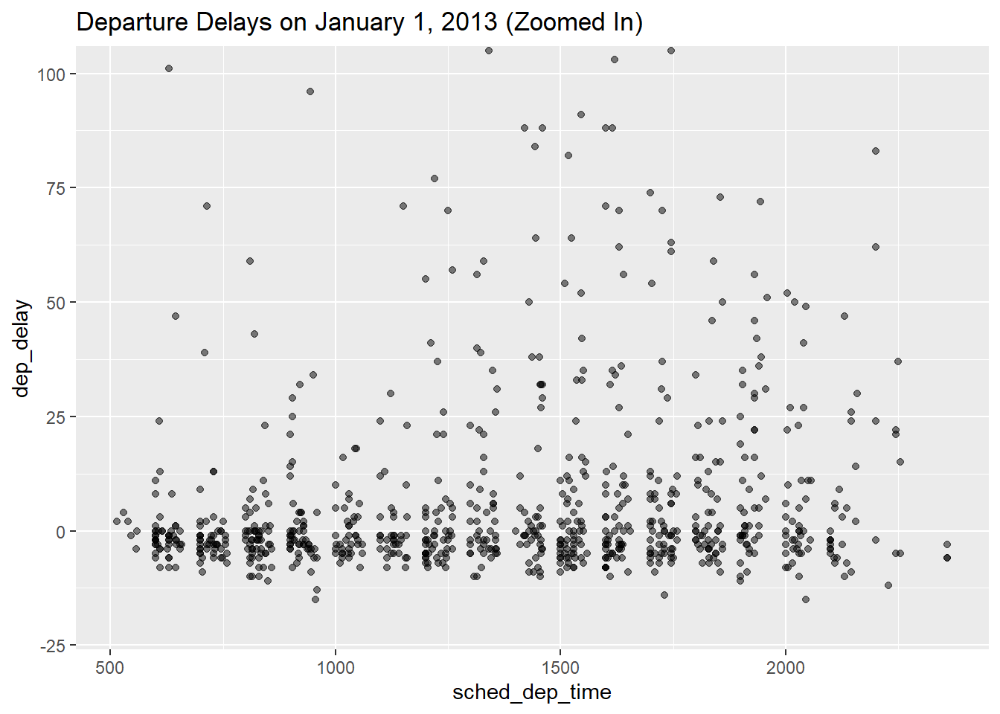
6.3.2 Overplotting
Overplotting occurs when a dataset is large enough that many points in a scatter plot overlap, making it difficult to see the underlying structure or density of the data.
# Create a ggplot object to reuse
diamonds_ggplot <- ggplot(diamonds, aes(x = carat, y = price))
diamonds_ggplot +
geom_point()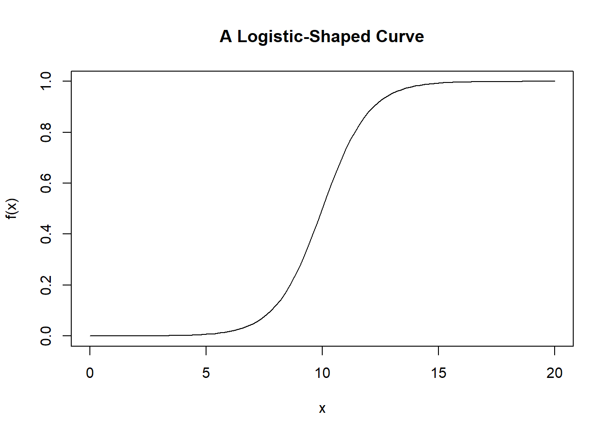
In this plot, many points lie on top of each other, obscuring patterns in the data.
Common solutions to overplotting:
- Use smaller points (
size): Reducing the point size decreases overlap.
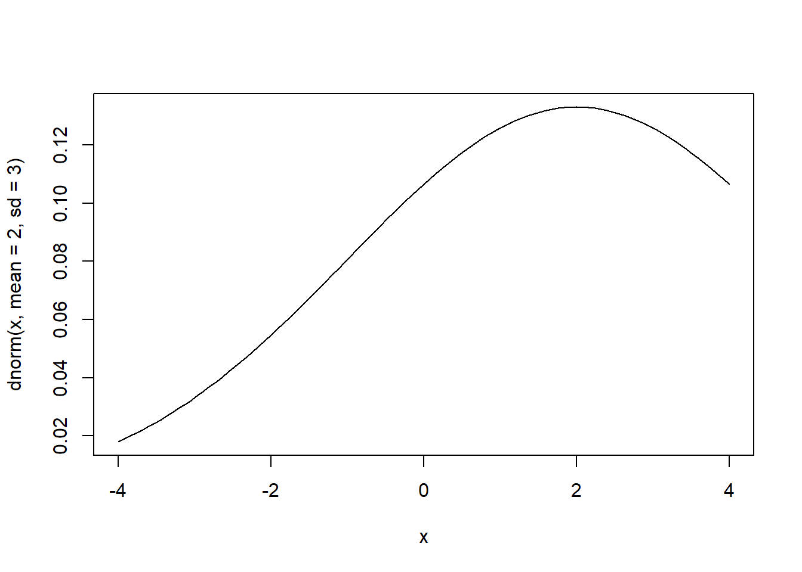
- Use transparency (
alpha): Making points partially transparent allows regions with many overlapping points

From this plot, we can see vertical bands at certain carat values, indicating that diamonds tend to be cut at preferred sizes.
- Bin the data into rectangles (
stat_bin2d): For very large datasets, it can be more effective to summarize density directly.
stat_bin2d() divides the plane into rectangular bins (similar to a 2D
histogram). The color of each rectangle indicates how many observations fall in
that region.
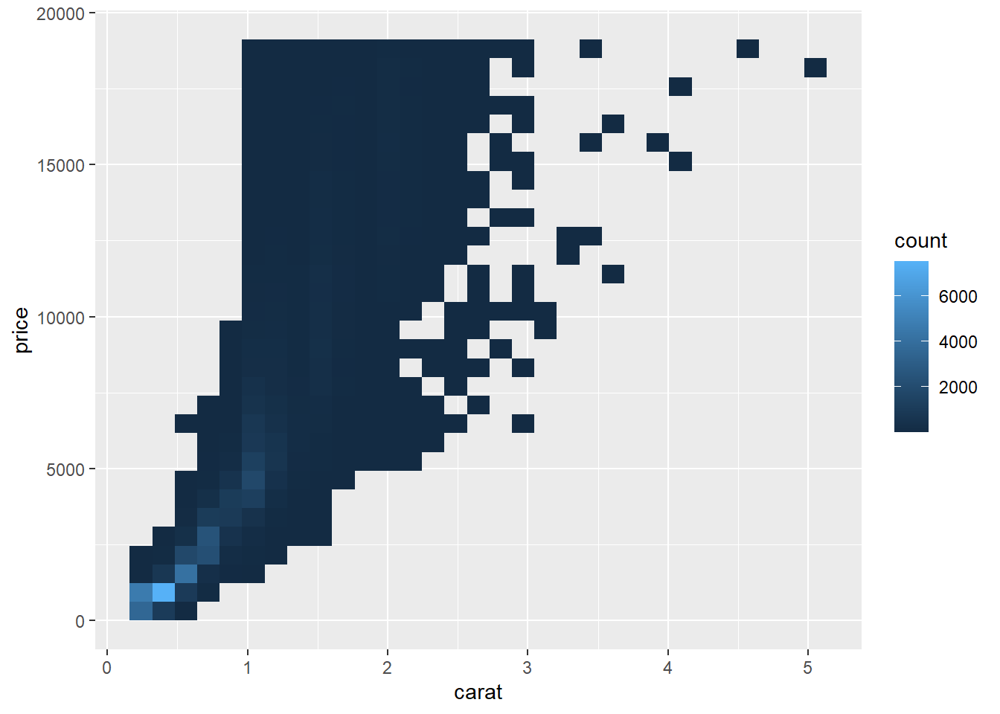
Using a larger number of bins gives finer resolution:

- Overplotting with discrete variables. Overplotting can also occur when one or both variables take only a few discrete values.
In the dataset ChickWeight, the variable Time is discrete.
head(ChickWeight)
## weight Time Chick Diet
## 1 42 0 1 1
## 2 51 2 1 1
## 3 59 4 1 1
## 4 64 6 1 1
## 5 76 8 1 1
## 6 93 10 1 1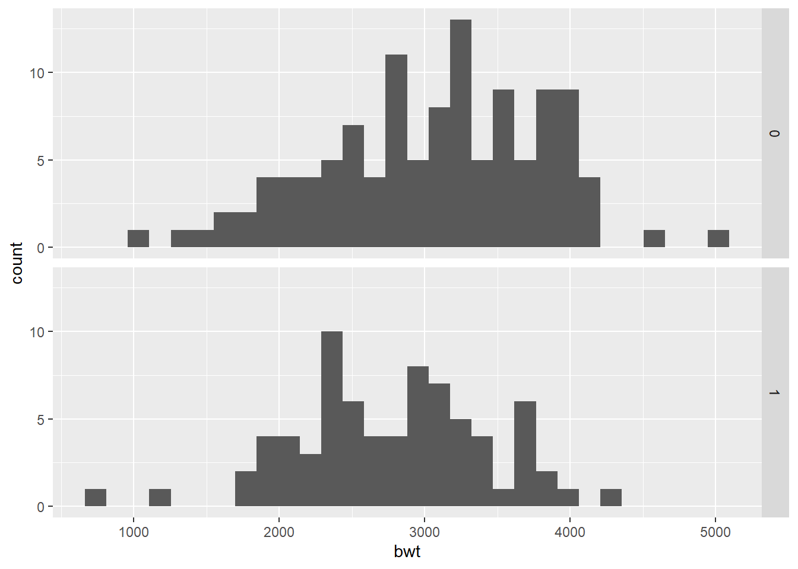
Because many observations share the same x-value, points overlap heavily.
A common solution is to jitter the points, adding a small amount of random noise to their positions.
If you only want to jitter in one direction (for example, horizontally):
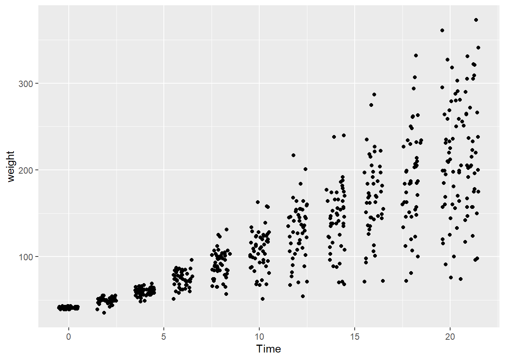
Jittering helps reveal how many observations occur at each discrete value without changing the underlying data.
6.3.3 Labelling points in a scatter plot
In scatter plots, we sometimes want to label individual points to identify
specific observations. In ggplot, this can be done using annotate() or
functions from the package ggrepel.
We will use the countries dataset from the package gcookbook to visualize
the relationship between health expenditure per capita and infant mortality
rate.
We focus on data from 2009 and countries with health expenditure greater than \(2{,}000\) USD per capita.
Labeling a specific point using annotate()
annotate() is useful when you want to label one or a few specific points.
Here we label the point corresponding to Canada.
# extract coordinates for Canada
canada_x <- filter(countries_subset, Name == "Canada")$healthexp
canada_y <- filter(countries_subset, Name == "Canada")$infmortality
ggplot(countries_subset, aes(x = healthexp, y = infmortality)) +
geom_point() +
annotate(
"text",
x = canada_x,
y = canada_y + 0.2,
label = "Canada"
)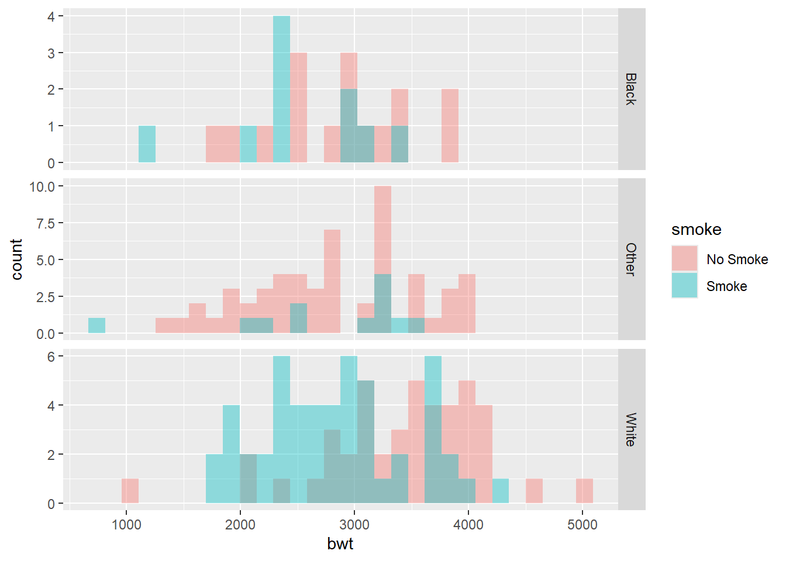
The small vertical offset (+ 0.2) prevents the label from overlapping with the
point.
Labeling many points using geom_text_repel()
When labeling many points, text labels often overlap and become unreadable.
The package ggrepel automatically adjusts label positions to avoid overlap.
# load the ggrepel package
library(ggrepel)
ggplot(countries_subset, aes(x = healthexp, y = infmortality)) +
geom_point() +
geom_text_repel(aes(label = Name), size = 3)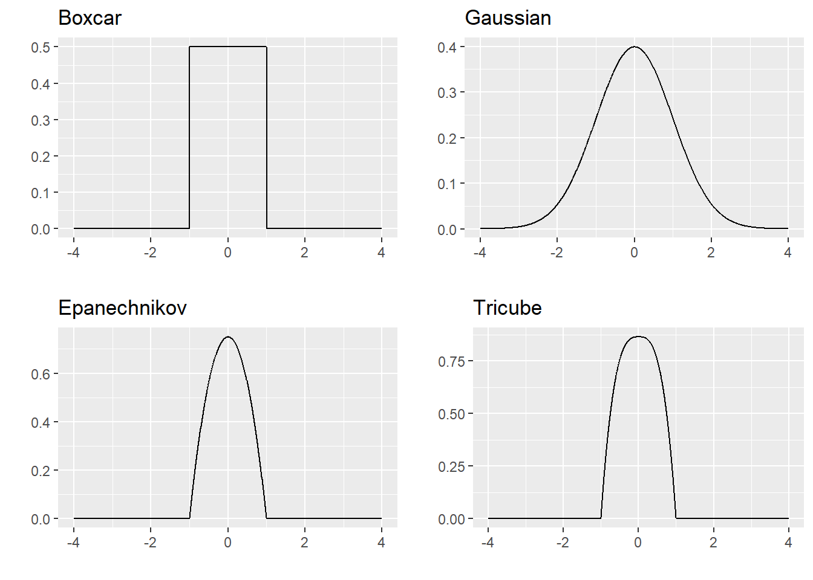
Labels with boxes: geom_label_repel()
geom_label_repel() works similarly to geom_text_repel(), but draws a box
around each label.
# geom_label_repel also depends on the package ggrepel
ggplot(countries_subset, aes(x = healthexp, y = infmortality)) +
geom_point() +
geom_label_repel(aes(label = Name), size = 3)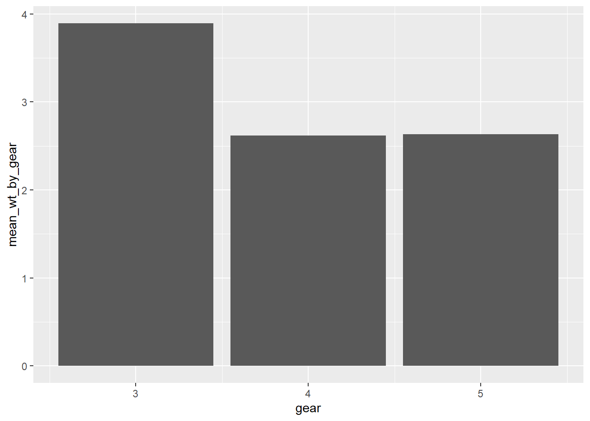
For more examples and customization options, see https://ggrepel.slowkow.com/articles/examples.html
6.4 Summarizing Data Distributions
6.4.1 Histogram
A histogram is used to visualize the distribution of a single continuous variable.
We illustrate histograms using the dataset birthwt from the package MASS.
The dataset birthwt contains birth weights of 189 babies, along with several
covariates describing the mothers.
Take a look at the data:
head(birthwt)
## low age lwt race smoke ptl ht ui ftv bwt
## 85 0 19 182 2 0 0 0 1 0 2523
## 86 0 33 155 3 0 0 0 0 3 2551
## 87 0 20 105 1 1 0 0 0 1 2557
## 88 0 21 108 1 1 0 0 1 2 2594
## 89 0 18 107 1 1 0 0 1 0 2600
## 91 0 21 124 3 0 0 0 0 0 2622Basic histogram:
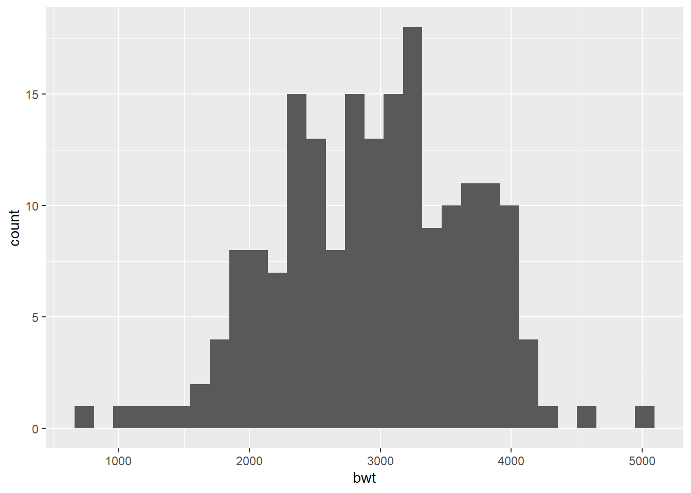
By default, ggplot chooses the number of bins automatically (30). Different choices of bins can change the appearance of the histogram.
Histogram with density instead of frequency
Sometimes it is useful to plot density rather than counts, especially when comparing distributions.
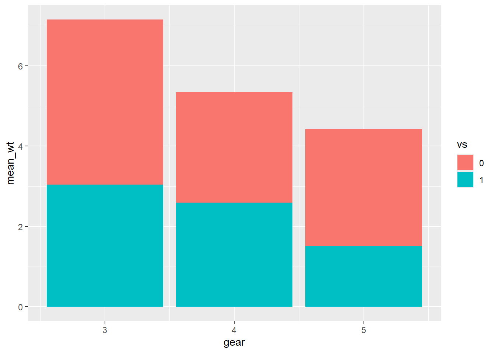
Comparing histograms
- Use
facet_grid().
We first compare birth weight distributions by smoking status during pregnancy.

To improve the labels, we recode the smoking variable.
birthwt_mod <- birthwt %>%
mutate(smoke = ifelse(smoke == 1, "Smoke", "No Smoke"))
ggplot(birthwt_mod, aes(x = bwt)) +
geom_histogram(bins = 30) +
facet_grid(smoke ~ .)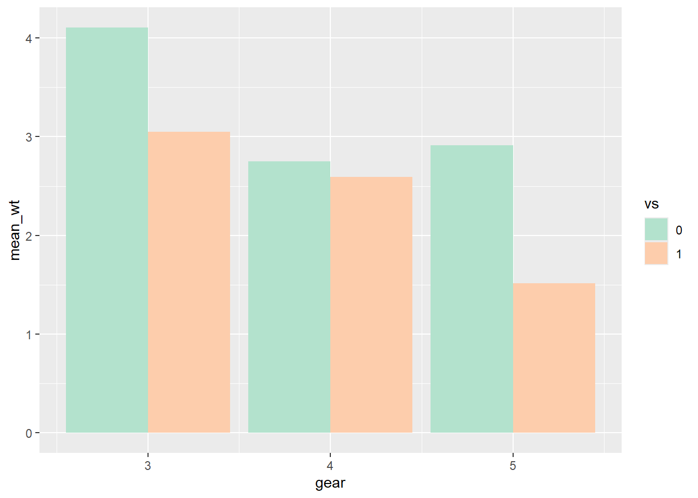
Alternatively, we can use recode_factor:
Faceting is often the clearest way to compare distributions across groups.
- Overlaying histograms using
fill().
Another approach is to overlay histograms using different colors.
ggplot(birthwt_mod, aes(x = bwt, fill = smoke)) +
geom_histogram(
position = "identity",
alpha = 0.4,
bins = 30
)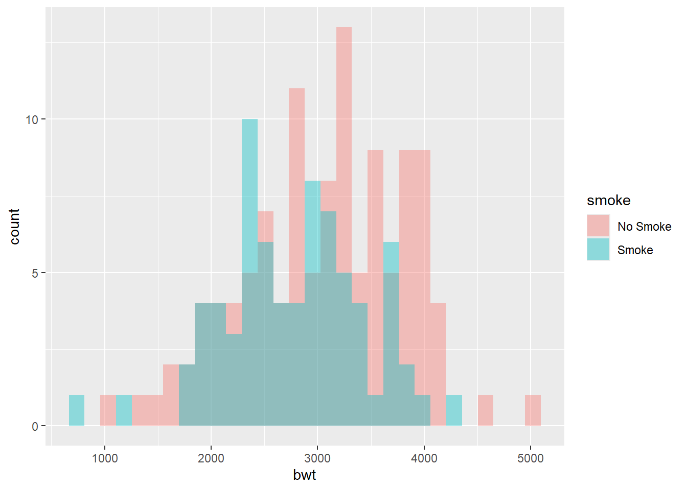
Here:
position = "identity"prevents stacking,alphaadds transparency to reveal overlap.
This approach emphasizes differences but can become cluttered when many groups are present.
Grouping by two discrete variables
We now group the data by smoking status and race.
birthwt_mod <- birthwt_mod %>%
mutate(
race = recode(
race,
`1` = "White",
`2` = "Black",
`3` = "Other"
)
)
ggplot(birthwt_mod, aes(x = bwt, fill = smoke)) +
geom_histogram(position = "identity", alpha = 0.4, bins = 30) +
facet_grid(race ~ ., scales = "free")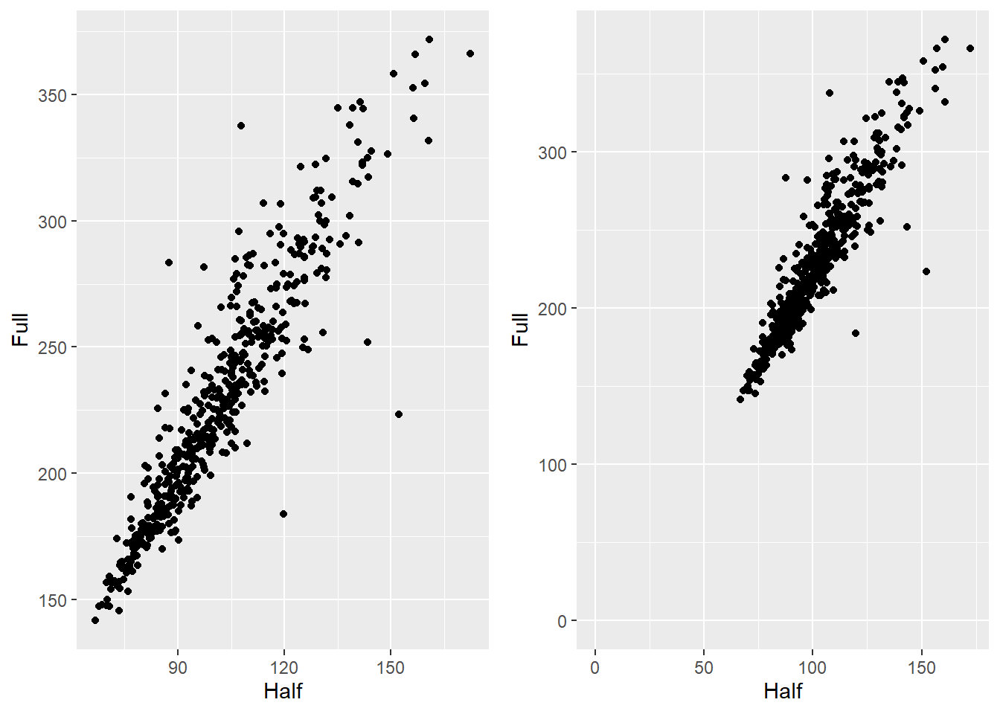
Using scales = "free" allows each panel to adjust its y-axis range
independently.
Remark: Because the dataset is relatively small, grouping by two variables may result in noisy histograms.
Another example: overlapping densities
The following example illustrates overlapping distributions using simulated data.
y1 <- rnorm(1000, 1)
y2 <- rnorm(1000, 2)
df <- tibble(y1, y2)
df_long <- tibble(
value = c(y1, y2),
group = rep(c("y1", "y2"), each = 1000)
)
ggplot(df_long, aes(x = value, fill = group)) +
geom_histogram(
aes(y = after_stat(density)),
position = "identity",
alpha = 0.5,
bins = 30
)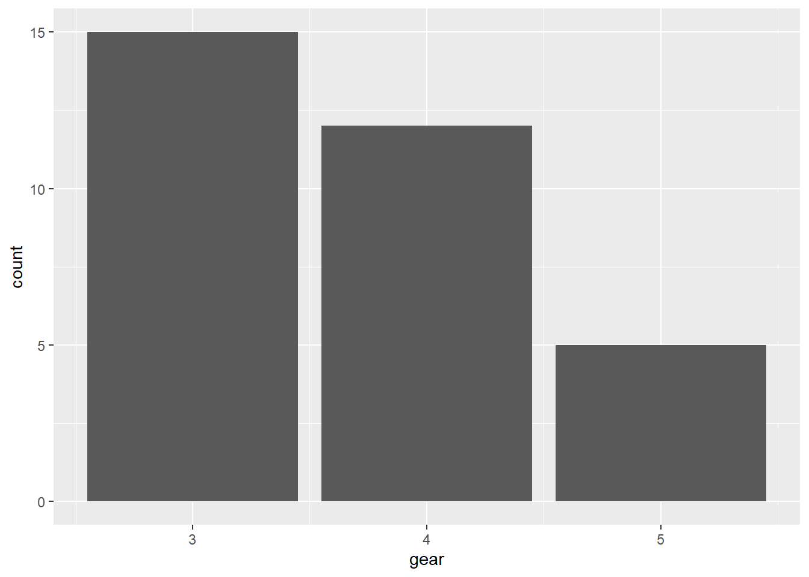
When comparing distributions, it is usually clearer to reshape the data into a long format and map the group to fill, rather than layering multiple geoms.
6.4.2 Kernel Density Estimate
Kernel density estimation is a nonparametric method for estimating the density of a sample. Here, nonparametric means that we do not impose a parametric model. A parametric model typically involves a finite-dimensional parameter \(\theta \in \mathbb{R}^d\) for some finite \(d\).
Let \(X_1,\ldots,X_n\) be i.i.d. random variables from a distribution with density \(f\). A histogram-based density estimate at a point \(x_0\) can be written as \[\begin{equation*} \hat{f}(x_0) = \frac{\text{number of $x_i$ in the bin containing $x_0$}}{n h}, \end{equation*}\] where the bin width is \(h\). A histogram does not produce a smooth estimate of the density. A commonly used smooth alternative is the kernel density estimator \[\begin{equation*} \hat{f}_n(x_0) = \frac{1}{nh}\sum^n_{i=1} K \bigg( \frac{x_0 - x_i}{h} \bigg), \end{equation*}\] where \(K\) is a kernel and \(h\) is the bandwidth.
For our purposes, a kernel is a non-negative symmetric function such that \(\int^\infty_{-\infty}K(x)dx = 1\) and \(\int^\infty_{-\infty} x K(x)dx =0\). Examples include: \[\begin{eqnarray*} \text{the boxcar kernel:} && K(x) = \frac{1}{2}I(|x| \leq 1)\\ \text{the Gaussian kernel:} && K(x) = \frac{1}{\sqrt{2\pi}} e^{-x^2/2} \\ \text{the Epanechnikov kernel:} && K(x) = \frac{3}{4}(1-x^2)I(|x| \leq 1) \\ \text{the tricube kernel:} && K(x) = \frac{70}{81}(1-|x|^3)^3I(|x| \leq 1), \end{eqnarray*}\] where \(I(|x| \leq 1) = 1\) if \(|x| \leq 1\) and equals \(0\) otherwise.

Because the kernel is symmetric around 0, the magnitude \((x_0-x_i)/h\) represents how far \(x_i\) is from \(x_0\) in units of the bandwidth. For the kernels above, the kernel value is smaller when the argument is farther from 0, so observations closer to \(x_0\) contribute larger weights in estimating \(\hat{f}_n(x_0)\).
The bandwidth controls smoothness: a larger bandwidth produces a smoother curve, while a smaller bandwidth produces a rougher curve.
We can create a kernel density estimate using geom_density(). The argument
adjust multiplies the default bandwidth (so smaller adjust corresponds to a
smaller bandwidth).
ggplot(birthwt, aes(x = bwt)) +
geom_density() +
geom_density(adjust = 0.25, color = "red") + # smaller bandwidth -> rougher
geom_density(adjust = 2, color = "blue") # larger bandwidth -> smoother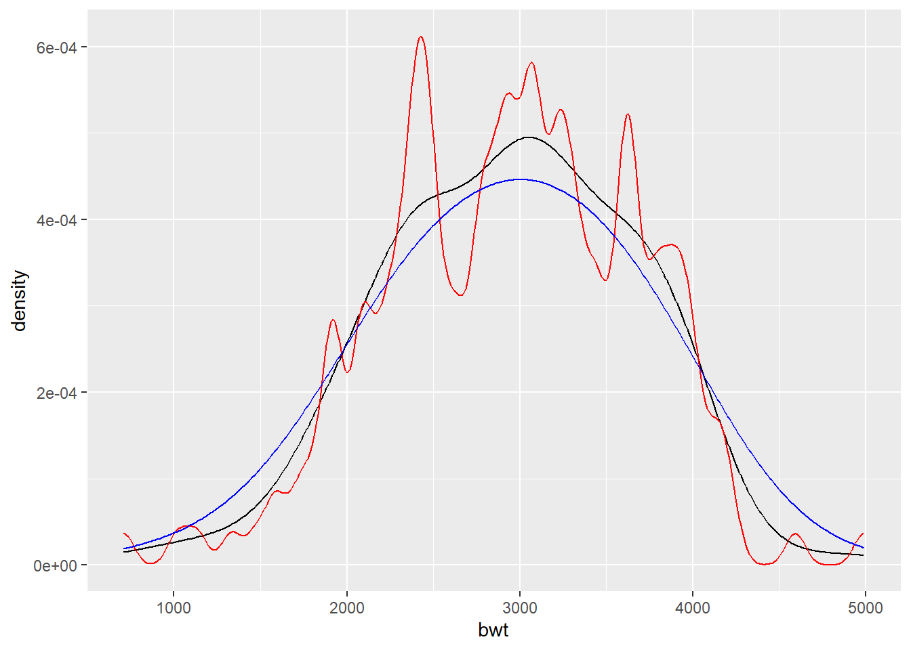
Overlaying a density curve with a histogram
ggplot(birthwt, aes(x = bwt)) +
geom_histogram(fill = "cornsilk", aes(y = after_stat(density))) +
geom_density()
Displaying kernel density Estimates from grouped data
To use geom_density() to display kernel density estimates from grouped data, the grouping variable must be a factor or a character vector. Recall that in birthwt_mod that we created earlier, the smoke variable is a character vector.
With color:
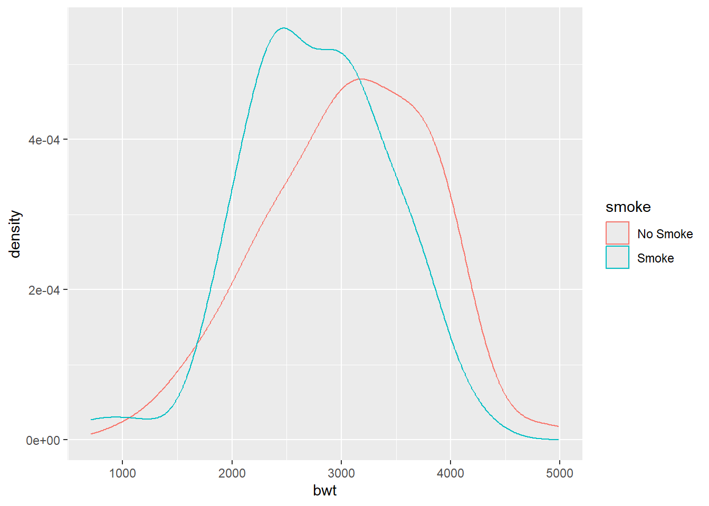
With fill:
ggplot(birthwt_mod, aes(x = bwt, fill = smoke)) +
geom_density(alpha = 0.3) # to control the transparency 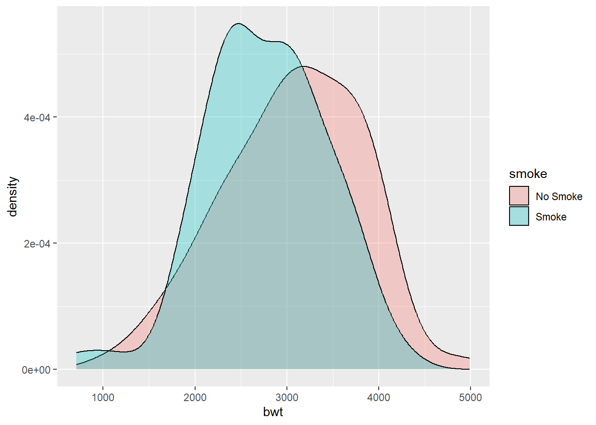
With facet_grid():
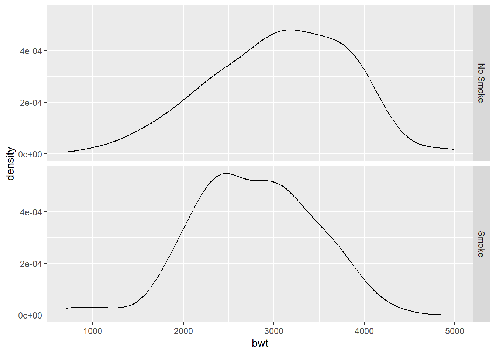
Another example:
y1 <- rnorm(1000, 1)
y2 <- rnorm(1000, 2)
df_long <- tibble(
value = c(y1, y2),
group = rep(c("y1", "y2"), each = 1000)
)
ggplot(df_long, aes(x = value, fill = group)) +
geom_density(alpha = 0.5)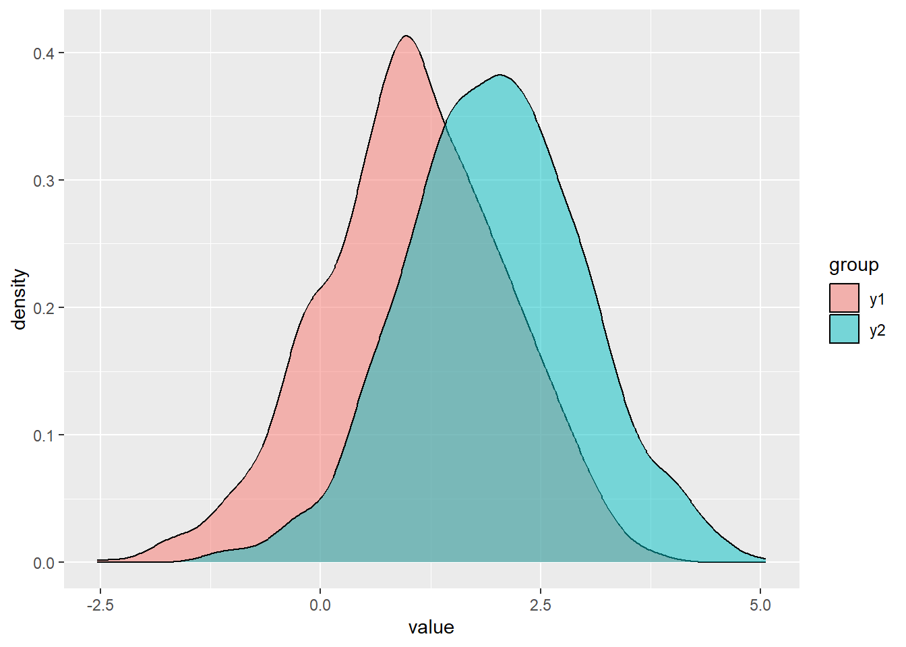
6.4.3 Boxplot
A boxplot provides a compact summary of the distribution of a numerical variable using quantiles. Unlike histograms and density plots, boxplots do not show the full shape of the distribution, but they are very effective for comparing distributions across groups.
A single boxplot
We first create a boxplot of birth weights.
ggplot(birthwt, aes(x = "", y = bwt)) +
geom_boxplot() +
labs(
x = "",
y = "Birth weight",
title = "Boxplot of Birth Weights"
)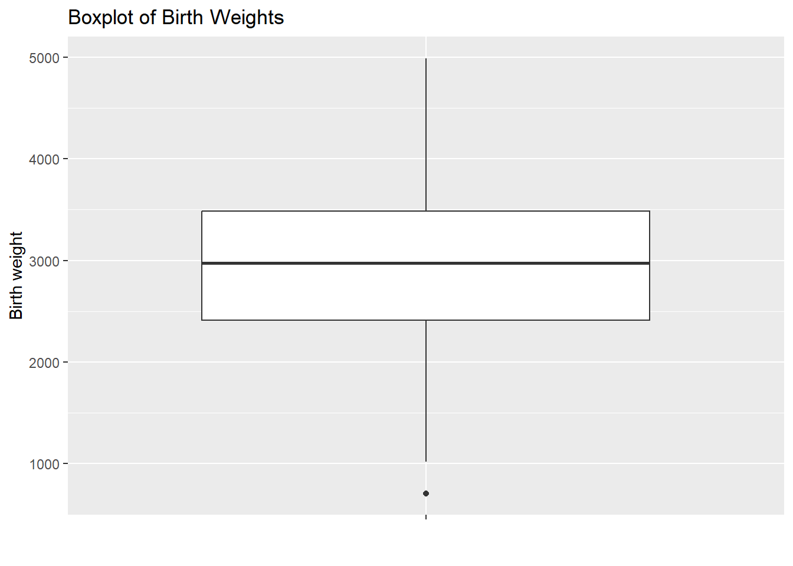
Here, the x-axis label is left empty since there is only one group.
Boxplots by group
Boxplots are especially useful for comparing distributions across groups.
Below, we compare birth weights by smoking status during pregnancy.
ggplot(birthwt_mod, aes(x = smoke, y = bwt)) +
geom_boxplot() +
labs(
x = "Smoking status",
y = "Birth weight",
title = "Birth Weight by Smoking Status"
)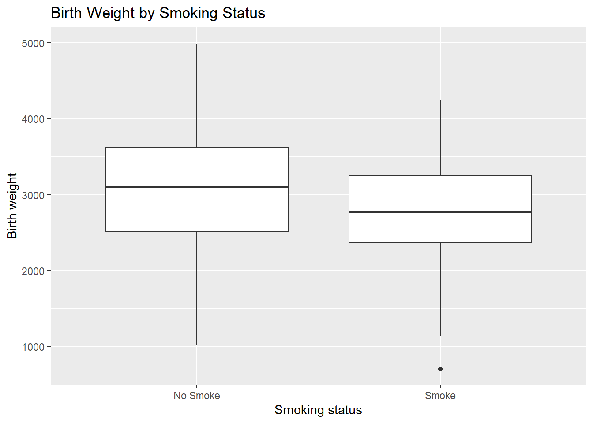
From this plot, we can compare:
medians across groups,
variability (box height),
presence of outliers.
Horizontal boxplots
As with other plots, boxplots can be flipped using coord_flip().
ggplot(birthwt_mod, aes(x = smoke, y = bwt)) +
geom_boxplot() +
coord_flip() +
labs(
x = "Smoking status",
y = "Birth weight",
title = "Birth Weight by Smoking Status"
)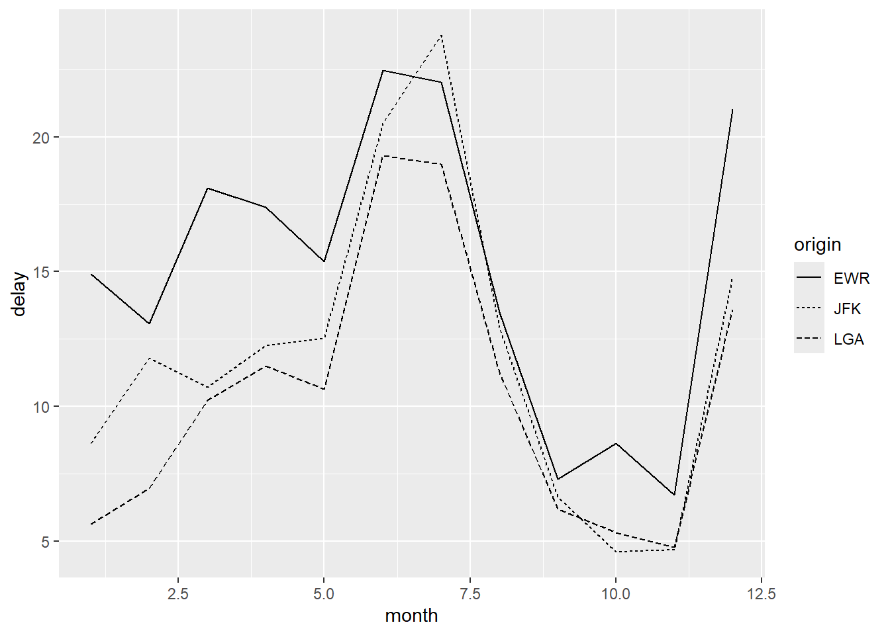
Example using flights
ggplot(flights, aes(x = factor(month), y = arr_delay)) +
geom_boxplot() +
coord_flip() +
labs(
x = "Month",
y = "Arrival delay (minutes)",
title = "Arrival Delays by Month"
)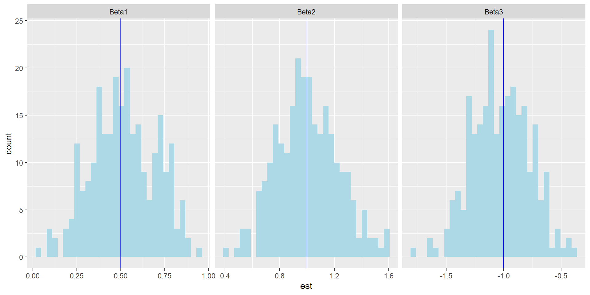
6.5 Saving your plots
There are two main types of image files: vector and raster (bitmap).
Raster images
Raster images are pixel-based. When you zoom in, individual pixels become visible. Common raster formats include PNG and JPEG (JPG).
- PNG files are lossless and generally higher quality.
- JPEG files are lossy and typically smaller in size.
Vector images
Vector images are constructed using mathematical formulas rather than pixels. They can be resized without loss of quality, and remain smooth when zoomed in. Common vector formats include PDF and AI.
Practical notes
Use PDF for reports, papers, and slides.
Use PNG for web output or when vector files become too large.
6.5.1 Outputting to PDF (vector format)
Suppose you want to save the following plot:
Using a graphics device:
# filename is the output file
# width and height are in inches
pdf("filename.pdf", width = 4, height = 4)
ggplot(mtcars, aes(x = wt, y = mpg)) +
geom_point()
dev.off()By default, the output file is saved in R’s current working directory.
PDF output is often a good choice because:
it preserves vector quality,
file sizes are usually small,
it is ideal for reports.
Remark: When a plot contains many points (severe overplotting), a PDF file can become larger than a PNG file because every point is stored as a vector object.
6.5.2 Outputting to bitmap formats (PNG)
# width and height are in pixels
png("png_plot.png", width = 600, height = 600)
ggplot(mtcars, aes(x = wt, y = mpg)) +
geom_point()
dev.off()For high-quality print output, a resolution of at least 300 ppi (pixels per inch) is recommended.
To create a 4 × 4 inch PNG at 300 ppi:
6.6 Axes, appearance
6.6.1 Swapping X- and Y-axes
Swapping the axes is useful when category labels are long or when a horizontal
layout is easier to read. This can be done using coord_flip().
library(ggpubr) # to use ggarrange
plot1 <- ggplot(heightweight, aes(x = sex, y = heightIn)) +
geom_boxplot()
plot2 <- plot1 +
coord_flip()
ggarrange(plot1, plot2)
6.6.2 Setting the range of a continuous axis
In ggplot, xlim() and ylim() remove data outside the specified
range. To zoom in without removing data, use coord_cartesian().
hw_plot <- ggplot(heightweight, aes(x = ageYear, y = heightIn)) +
geom_point()
hw_plot_zoom <- hw_plot +
coord_cartesian(
xlim = c(14, 18),
ylim = c(60, 70)
)
ggarrange(hw_plot, hw_plot_zoom)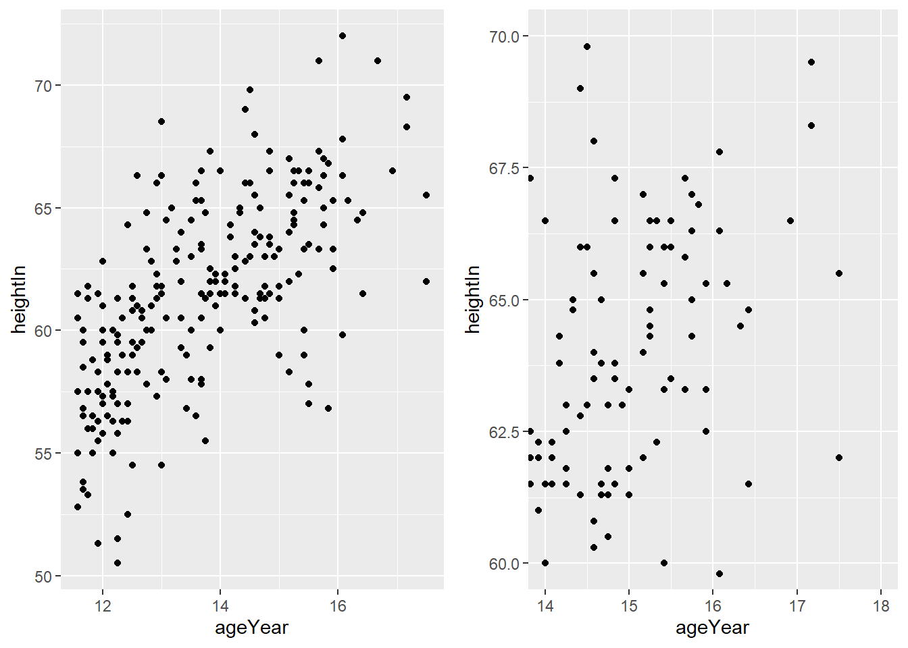
6.6.3 Changing the text of axis labels
Axis labels can be changed using labs(). Line breaks can be added using \n.
hw_plot <- ggplot(heightweight,
aes(x = ageYear, y = heightIn, colour = sex)) +
geom_point()
hw_plot +
labs(
x = "Age\n(years)",
y = "Height (inches)"
)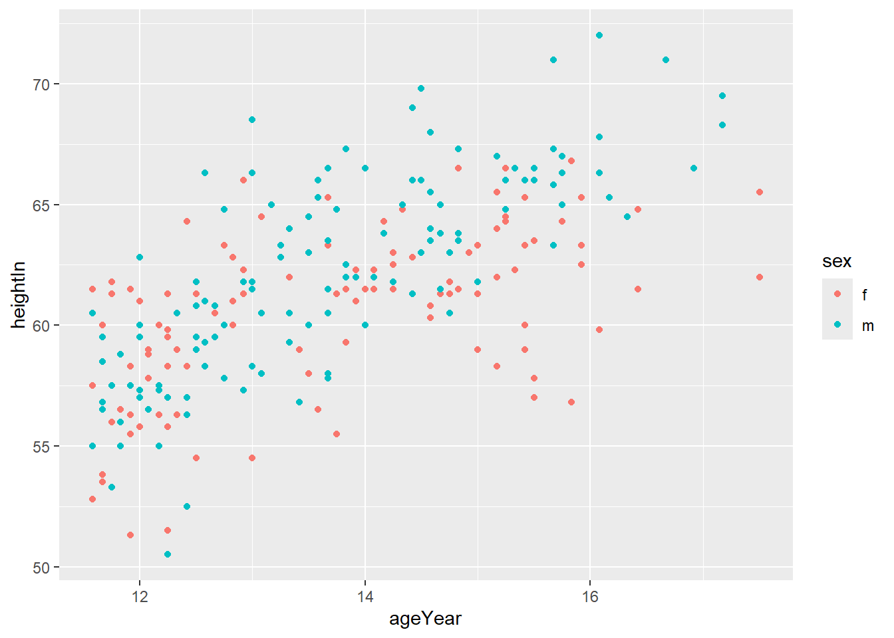
6.6.4 Adding Titles
You can add a title using labs(title = ...).
hw_plot <- ggplot(heightweight, aes(x = ageYear, y = heightIn)) +
geom_point()
hw_plot1 <- hw_plot +
labs(title = "Age and Height of Schoolchildren")
hw_plot2 <- hw_plot +
labs(title = "Age and Height\nof Schoolchildren")
ggarrange(hw_plot1, hw_plot2)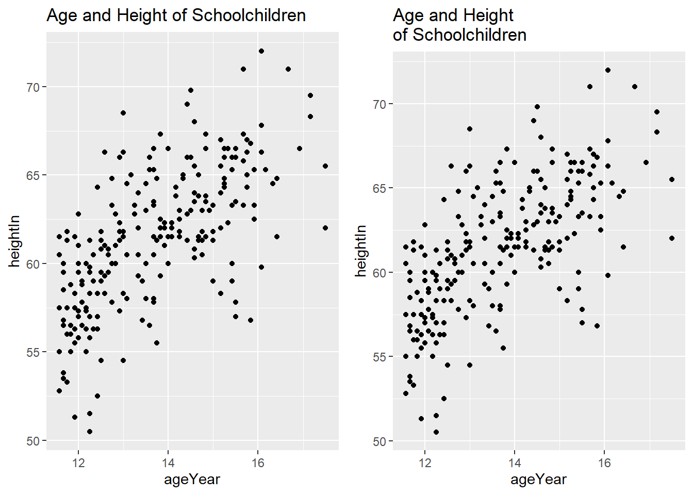
6.6.6 Using Themes
Themes control the non-data appearance of a plot, such as background, gridlines, and fonts.
hw_plot_grey <- hw_plot +
theme_grey() # default theme
hw_plot_classic <- hw_plot +
theme_classic()
hw_plot_bw <- hw_plot +
theme_bw()
hw_plot_minimal <- hw_plot +
theme_minimal()
ggarrange(hw_plot_grey,
hw_plot_classic,
hw_plot_bw,
hw_plot_minimal)
6.7 Summary
6.7.1 Bar charts
- examples of using pipe
%>%together withggplot - create bar charts of counts
- create bar charts of values
- change “fill” and “outline” of the bars
- create grouped bar charts
- create stacked bar charts
- convert a variable into factor in ggplot
- use different colour palette
- control the width of the bars
6.7.2 Line graphs
- create line graphs
- label the graph
- change the range of y-axis
- create line graphs with multiple lines
- use multiple geoms (geometric objects) (e.g. additing the points on top of the lines)
- change shape, size, fill, outline of points
- change line type
6.7.3 Scatter plot
- create scatter plots
- visualize an additional discrete variable
- visualize an additional continuous variable
- visualize two additional discrete variables
- overplotting (use smaller points, make points semitransparent, bin data into rectangels, jitter the points)
- label points in a scatter plot
6.7.4 Summarizing data distributions
- create histograms (frequency and density)
- compare two histograms (
facet_grid(),fill()) - create histograms with two additional discrete variables
- create kernel density estimates
- overlay a density curve with a histogram
- display kernel density estimates from grouped data (
color,fill,facet_grid) - create boxplots